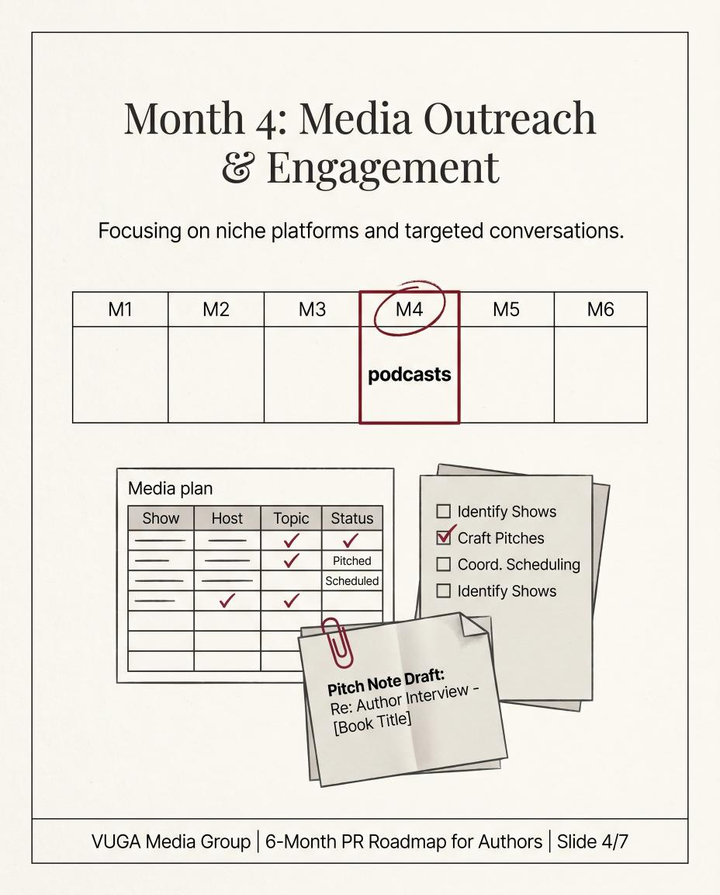
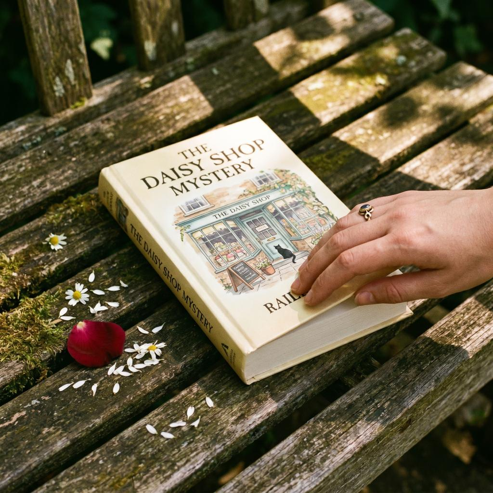

Cozy mysteries don't behave like other fiction. Readers binge by series, follow recurring sleuths for years, and forgive almost anything except a wrong genre signal on the cover. If you're writing one and trying to launch it like a thriller or a literary debut, you're already losing money.
This playbook is the version that respects how cozy actually sells in 2026 — series-first, Kindle Unlimited friendly, lifestyle-magazine adjacent, and slow-burning toward a six-figure backlist if you stick the landing. We'll cover the cover signals that matter, the launch sequence that gets to 1,000 copies, where the real readers live, and what kind of press actually moves cozy sales (it isn't a wire release).
Cozy Mystery Is a Series Business, Not a Single-Book Business
The first reframe: a cozy mystery launch is not a launch of one book. It's the opening act for a series your reader expects to last 6–20 installments. The genre's economics depend on backlist read-through. A reader who finishes book one of a strong cozy series buys books two through five within a month roughly 35–55% of the time, based on Kindle Unlimited page-read patterns reported across indie cozy author Slacks and Reddit threads.
The implication: don't dump your full marketing budget on book one. Build a launch that feeds a flywheel.
A workable cadence:
- Books 1–3 released within 6 months, ideally pre-orderable simultaneously by the time book 1 drops
- Books 4–6 at 4–5 month intervals after that
- A novella or seasonal short between book 2 and 3 to keep newsletter momentum going
Authors who launch book one and disappear for 18 months while writing book two end up paying to acquire the same readers twice. The cozy reader who finished your debut in February will not remember your name in October.
Cover Signals — The Most Common Way Cozies Self-Sabotage

Cozy mystery readers scan a thumbnail in less than two seconds and decide whether your book belongs to their genre or not. If your cover signals "thriller," "general fiction," or "literary," they skip. The signals are tighter than most debut authors realize:
- Soft, warm color palette — pastels, creams, sky blue, dusty rose. Not blood red. Not stark black-and-white.
- Illustrated style — usually flat or semi-flat illustration, not photographic. A photo cover reads as women's fiction or romance to a cozy buyer.
- Setting visible — a tea shop, bakery, bookstore, lighthouse, country inn, garden. The "where" matters as much as the "who."
- An animal companion when the series has one — cat, corgi, parrot, golden retriever. The pet is a series signal in itself.
- Title with a pun, alliteration, or food-and-mayhem combo — "Murder at the Mariposa Tea Shop," "Scones and Skullduggery," "A Latte Trouble in Paradise."
- Author name in a clean serif at the top, slightly smaller than the title
If you're reading this list and your existing cover hits two of seven, redesign before you spend a dollar on ads. Reedsy's cozy mystery designer marketplace lists illustrators with genre-trained portfolios for $400–$900 per cover — cheaper than a single failed BookBub ad campaign.
The Pre-Launch Stack (60 Days Out)
Cozy mystery readers reward authors who build communities before they ask for a sale. Your pre-launch list should include:
- A Bookfunnel or StoryOrigin newsletter swap group with 10–20 other cozy authors. Trade reader-magnet downloads for 90 days; build a starting list of 500–1,500 cozy-specific subscribers.
- An ARC team of 30–80 readers sourced from Booksprout, NetGalley Co-op (cheaper than full NetGalley listings — about $50/month), and your existing newsletter.
- A pre-order live on Amazon at least 30 days before launch with a polished blurb, three-tier categories selected, and seven keyword phrases tested in Publisher Rocket.
- A Goodreads author profile with the book listed, three "currently reading" friends from your ARC team, and the giveaway tool active for the first 14 days post-launch.
- A simple author website with a sample chapter, a series page, and an email opt-in. See author website that sells books for what actually converts.
If you skip the email list and try to launch on social media virality, you will not hit 1,000 copies. Cozy readers are not on TikTok in meaningful numbers — the genre skews 45+, and the audience lives in Facebook groups, Goodreads forums, MyBookCave, and Bookbub follower lists.
Launch Week — The 1,000-Copy Sequence
A realistic launch-week target for a debut cozy with a polished cover, decent pre-launch list, and KU enrollment is 400–800 paid copies plus 200–400 KU borrows in the first seven days. To reach the 1,000 mark inside 14 days:
Day -7 to Day 0 (pre-launch):
- Final ARC reminders to reviewers; aim for 25 reviews live by day 3
- Newsletter announcement to your list (subject lines that work for cozy: "The new book is here — and there's a missing parrot")
- Schedule a $30/day Amazon Ads campaign on three exact-match keyword phrases and five competitor-author auto-targets
Day 1–3:
- Newsletter swap with 5 cozy author partners — they mention your book to their lists in their next sends
- BookFunnel cross-promotion in a "new releases this week" cozy-specific bundle ($10–$25)
- Engage every Goodreads review personally (a one-line thank-you, no defensiveness on lower stars)
Day 4–7:
- Submit to BookBub Featured Deal at $0.99 promo price for week 2 if you can — most debut cozies are rejected the first time, that's normal
- Run a Bargain Booksy or Fussy Librarian feature ($40–$120)
- Post in 5 cozy-mystery Facebook groups (NOT spam — read group rules; some allow author posts in pinned weekly threads only)
Day 8–14:
- Pulse Amazon Ads up to $50/day if ACOS is under 40%
- Switch ad creative to highlight reviews ("4.5 stars from 60 readers")
- Send a check-in email to your list: "How are you enjoying it so far?" — drives word-of-mouth more than another sales push
This sequence, run with discipline, hits 1,000 copies for most well-positioned debut cozies. It does not require a press campaign. Press is layered on top later, when you have a series and want to go from indie-known to broadly visible.
Where Cozy Readers Actually Are
The biggest waste in cozy mystery marketing is spending on the wrong platform. Here's the honest map of where cozy readers spend their reading-discovery time, ranked roughly by ROI for indie authors:
- Kindle Unlimited browse and recommendations — the single largest source of cozy reader discovery. Optimize categories, keywords, and series page first.
- Goodreads "Cozy Mysteries" group + Listopia lists — 350K+ members across the main groups, very active.
- Facebook cozy-mystery reader groups — "Cozy Mystery Lovers," "Cozy Mysteries with Sleuthing Pets," and dozens of niche groups (knitting cozies, baking cozies, paranormal cozies). Slow, relationship-based posting wins.
- Email newsletter swaps — through StoryOrigin, BookFunnel, or one-on-one trades.
- BookBub follower count and Featured Deals — an under-rated channel; even if you can't get a Featured Deal at first, the follower count drives rec engine traffic.
- Cozy-genre podcast guest spots — small, but listeners are buyers (try "Cozy Mystery Magazine Podcast," "Murder by the Bookend").
- Pinterest — slow burn but real for cozy aesthetic (recipes from the book, story-setting boards, character mood boards).
What's NOT on this list and shouldn't be in your top-tier plan: TikTok, Twitter/X, paid Instagram, generic Reddit subs, podcast pitches outside cozy-genre shows. Some authors crack BookTok with cozy and good for them — but it is the exception, not the strategy.
The Press Layer — When Magazine Coverage Helps Cozy Sales

For a debut cozy author, traditional book PR rarely justifies the cost — see book PR cost in 2026 for the real numbers. But there is one specific kind of editorial coverage that does move cozy sales: lifestyle-adjacent magazine features that hit your reader's actual reading habits.
Cozy readers consume Closer Weekly, In Touch, Woman's World, Reader's Digest, Real Simple, and similar lifestyle weeklies. A full editorial article in one of those — not a press release, an actual feature with the book cover and author photo — sits next to articles your reader already trusts. The conversion rate from "magazine reader" to "cozy reader" is meaningfully higher than from "Twitter user."
The press hook for cozy authors that works: lean into the lifestyle angle. "Inside the bakery that inspired the bestselling Mariposa Tea Shop mysteries." "Why women over 50 are flocking back to mystery novels." "The cat who became a cozy mystery's accidental detective." Lifestyle editors will run those stories. They will not run "debut author launches first novel."
A good way to get one of those features without pitching for six months is to use a publisher with contractual editorial access. See how to get into TIME magazine for what that looks like at the top of the pyramid; for genre cozy, the celebrity weeklies are usually a better fit.
Series Read-Through and the Long Game
The 1,000-copy goal is week one. The real cozy mystery business starts at month four when book two launches. Read-through metrics to track:
| Metric | Healthy cozy series benchmark |
|---|---|
| Book 1 to Book 2 read-through | 35–55% |
| Book 2 to Book 3 | 60–75% |
| Book 3 to Book 4 | 70–85% |
| KU pages read per release week | 50K–200K (book 1), growing 15–30% per release |
| Paid copy pace, months 6–12 | 100–300 copies/month per book in the series |
Authors who hit those benchmarks build a reliable five-figure annual income from the backlist alone within 24–30 months of book one. Authors who don't usually have a fixable problem: cover, blurb, opening pages, or the gap between books. None of those are unfixable; all of them require admitting it before you scale spend.
What VUGA does for cozy mystery authors
VUGA is a marketing-first publisher with contractual editorial access to magazines that cozy readers actually read — Closer Weekly, In Touch Weekly, Star Magazine, OK!, Hollywood Life — plus a 104-outlet digital network and tier-1 add-ons like TIME and Rolling Stone UK. We don't do royalty paperwork or wire releases. We place full editorial articles by contract, with money-back guarantees on any failed placement. For a cozy series author who has hit 1,000 copies organically and wants to stack lifestyle-magazine credibility on top, our for-authors packages are priced from a $97 trial through $19,997 for the TIME + Rolling Stone bundle. We're not the right tool for every author — if you don't have book one polished yet, work on the book first. But once it's selling, layering editorial press onto a cozy series compounds for years.
A Realistic 12-Month Cozy Launch Plan
If you're starting from "I just finished my manuscript," here's what 12 months of disciplined cozy launching looks like:
- Month 1: Cover and blurb redesign if needed. Beta readers. Editor.
- Month 2: ARC team built. Pre-order live. Newsletter starter list at 200–500.
- Month 3: Launch book 1. Hit 1,000 copies in first 14 days using the sequence above.
- Months 4–6: Drafting book 2. Sustaining ad spend on book 1. Newsletter to 1,000+.
- Month 7: Book 2 launches. Series page created on Amazon. Read-through tracked.
- Months 8–10: Drafting book 3. First lifestyle-magazine feature (via guaranteed placement or earned pitch).
- Month 11: Book 3 launches. BookBub Featured Deal applied for. KU borrows accelerating.
- Month 12: Three-book backlist live, $1,500–$5,000/month earnings, real reader community. The flywheel is turning.
This is the realistic version. There's no shortcut at the cozy genre, but there's also no ceiling — series cozy authors who stick the cadence routinely build half-a-million-dollar backlists over five years.
If you want to map a specific launch plan against your manuscript, drop a note — happy to look at the cover, blurb, and positioning before you spend ad money. The first read is free; the second one is faster because we already know your series.
Sources for this article:
- Kindlepreneur, "How to Market a Mystery Novel"
- Reedsy, "Cozy Mystery Cover Design"
- Publisher Rocket, "Amazon Keyword Research for Authors"
- BookBub Partners, "Cozy Mystery Reader Trends"
- Jane Friedman, "Series Fiction and Read-Through"
- IngramSpark, "Genre Marketing for Indie Authors"